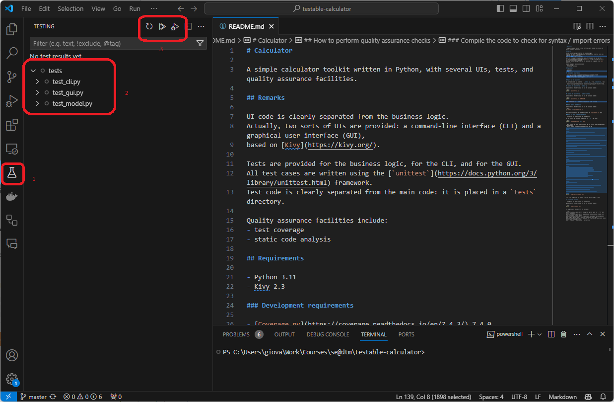
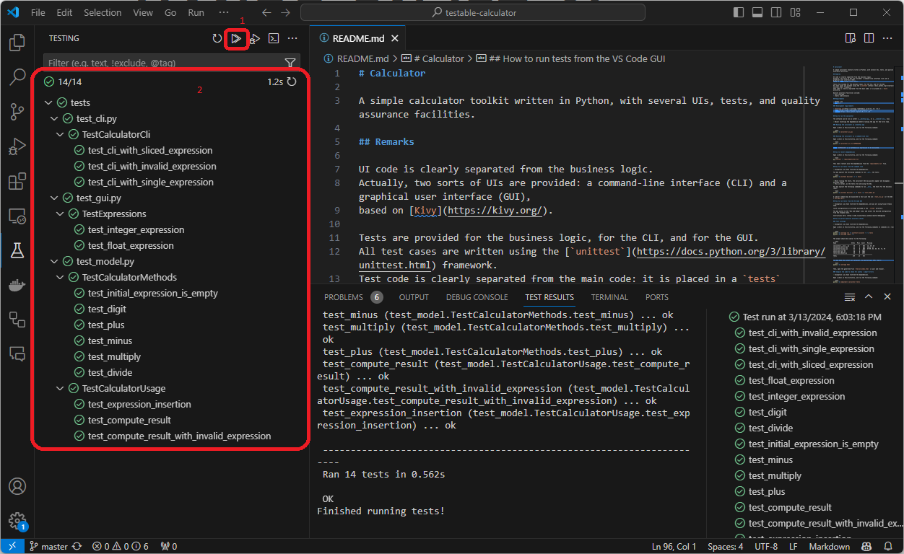

Compiled on: 2024-03-14 — printable version
Would you drive a car that has not been succefully passed its quality control?
As any engineered product, software should be subject to quality assurance control.
Quality assurance (in SE) is the set of activities and practices aimed at ensuring that a software product works and it is of good quality.
Insight: software works when it meets the requirements
Insight: software is good when it is
easy for developers to evolve or maintain it
Recall that good software should have many quality attributes
How to translate these attributes into quality assurance practices?
Verify that the software meets quality criteria.
Running an application manually is a form of testing: exploratory testing.
If there is a plan that can be followed step-by-step, then there is a program that can do it for you
As any engineering product, software can be tested at different levels of abstraction
Unit testing: test single software components
class (or function or module) behavior the expected one?Integration testing: test an entire subsystem, i.e. the interplay among multiple components
A uses class B and C. Are they working together as expected?End-to-end (or acceptance) testing: test an entire system (may involve aesthetics/usability criteria)
A well-maintained engineering product must have tests at all granularity levels
Creating automated test procedures makes the activity of testing very cheap (in terms of effort)
Being cheap, automated tests can serve as canaries in cold mines
Test failures are precious during development
The more granular the tests, the easier it is to spot and fix problems
Would you be comfortable with a car that passes the crash test
99.9%of time, but on the0.1%of the cases fails unexplicably?
Reproducibility is central for testing
(true for any engineering, but in particular for software)
(we will focus on Python, but the concepts are general)
the source code can now be conceinved as composed by two parts:
the test code is usually placed in a separate folder, and it is usually named tests/ (or test/)
the dependencies of the project are now of two sorts:
developers may now want to launch not only the software, but also the tests
root_directory/
├── main_package/ # main package (i.e. directory for the main code)
│ ├── __init__.py
│ ├── sub_module.py
│ └── sub_package/
│ ├── __init__.py
│ └── sub_sub_module.py
├── tests/ # directory for the test code
│ ├── test_module_1.py
│ ├── ...
│ └── test_module_N.py
├── .python-version
├── README.md
├── requirements-dev.txt # file to list *development* dependencies
└── requirements.txt # file to list *main* dependencies
Important conventions:
all the test code should be placed in a directory named tests/ (or test/)
the test code should be put into .py files whose name starts with test_
requirements.txt is for the main dependencies, requirements-dev.txt is for the dev dependencies
requirements.txt example:
Kivy>=2.3.0
requirements-dev.txt example:
-r requirements.txt
pytest>=8.1.0
System under test (SUT): the component of the software that is being tested
class, a function, a moduleTest case: a class that contains the test functions for a specific SUT
Test suite: a collection of test cases, commonly related to similar SUTs
test_*.py fileAssertion: a boolean (i.e. either True or False) check about the SUT
True, the assertion passes, and the test proceedsFalse, the test fails, and it is interruptedTest procedure: a sequence of actions and assertions about some SUT
True and no unexpected error occursWe adopt unittest, a built-in library for writing tests in Python
JUnit library for Javapytest is a popular alternative (but it needs to be installed)unittestLet’s assume this is the test_my_system.py test suite (full code here):
import unittest
# first test case
class TestMySystemUnderOrdinaryConditions(unittest.TestCase):
# initialization activities (most commonly, just initialises the SUT)
def setUp(self):
# activities to be performed BEFORE EACH test procedure
self.sut = MySystem() # sut instantiation
# test procedure 1
def test_initial_condition(self):
self.assertEquals(self.sut.my_attribute, 123) # assertion (my_attribute is initially 123)
self.assertEquals(self.sut.other_attribute, "foo") # assertion (other_attribute is initially "foo")
self.assertTrue(self.sut.is_ready()) # assertion (function is_ready returns True)
# test procedure 2
def test_do_something(self):
self.sut.do_something() # legitimate action
self.assertEquals(self.sut.my_attribute, 124) # assertion (my_attribute is 124 after do_something)
self.assertEquals(self.sut.other_attribute, "bar") # assertion (other_attribute is "bar" after do_something)
self.assertFalse(self.sut.is_ready()) # assertion (function is_ready returns False after do_something)
# test procedure 3
def test_do_something_bad(self):
with self.assertRaises(ValueError): # assertion (do_something_base raises ValueError)
self.sut.do_something_bad() # illegitimate action
# you can put as many test procedures as you want
# cleaning up activities (most commonly omitted, i.e. nothing to do)
def tearDown(self):
# activities to be performed AFTER EACH test procedure
self.sut.shutdown() # legitimate action
# second test case
class TestMySystemUnderSpecialConditions(unittest.TestCase):
# put other test proceedures here
# you can put as many test cases as you want
unittest tests suitesMany assertion functions, cf.: https://docs.python.org/3/library/unittest.html#assert-methods
Many options to customise/parametrise your test suites, cf. https://docs.python.org/3/library/unittest.html
How to run tests:
python -m unittest discover -v -s tests
-v stands for verbose (i.e. more detailed output)-s stands for start directory (i.e. the directory where the tests are, in this case tests)Effect of running all tests with subcommand discover:
test_*.py files in the tests/ directory (and its sub-directories) are loaded
unittest.TestCase from those files are instantiated
test_ are executed
setUp function is executed before each test functiontearDown function is executed after each test functionunittestFork the following repository: https://github.com/unibo-dtm-se/testable-calculator
Clone the forked repository on your machine
Open VS Code into the testable-calculator directory
Restore both dependencies and dev-dependencies
pip install -r requirements-dev.txtunittestMinimalistic: python -m unittest discover -s tests
..............
----------------------------------------------------------------------
Ran 14 tests in 0.478s
OK
(each dot represents a successful test procedure… not really clear, right?)
Verbose: python -m unittest discover -v -s tests (notice option -v)
test_cli_with_invalid_expression (test_cli.TestCalculatorCli.test_cli_with_invalid_expression) ... ok
test_cli_with_single_expression (test_cli.TestCalculatorCli.test_cli_with_single_expression) ... ok
test_cli_with_sliced_expression (test_cli.TestCalculatorCli.test_cli_with_sliced_expression) ... ok
[...]
test_expression_insertion (test_model.TestCalculatorUsage.test_expression_insertion) ... ok
----------------------------------------------------------------------
Ran 14 tests in 0.447s
OK
(one test per line: clearer)
unittestBefore:

After:

unittesttests/test_model.py file and listen to the teacher explanation
Calculator classimport unittest
from calculator import Calculator
# test case testing what the effect of each method of the Calculator class is
# when executed on a fresh new Calculator instance
class TestCalculatorMethods(unittest.TestCase):
def setUp(self):
# here we create one "virgin" instance of the Calculator class (our SUT)
self.calculator = Calculator()
def test_initial_expression_is_empty(self):
# here we ensure the expression of a virgin Calculator is empty
self.assertEqual("", self.calculator.expression)
def test_digit(self):
# here we ensure that the digit method effectively appends one digit to the Calculator expression
self.calculator.digit(1)
self.assertEqual("1", self.calculator.expression)
def test_plus(self):
# here we ensure that the plus method effectively appends one "+" symbol to the Calculator expression
self.calculator.plus()
self.assertEqual("+", self.calculator.expression)
def test_minus(self):
# here we ensure that the minus method effectively appends one "-" symbol to the Calculator expression
self.calculator.minus()
self.assertEqual("-", self.calculator.expression)
def test_multiply(self):
# here we ensure that the multiply method effectively appends one "*" symbol to the Calculator expression
self.calculator.multiply()
self.assertEqual("*", self.calculator.expression)
def test_divide(self):
# here we ensure that the divide method effectively appends one "/" symbol to the Calculator expression
self.calculator.divide()
self.assertEqual("/", self.calculator.expression)
# test case testing the usage of the Calculator class
class TestCalculatorUsage(unittest.TestCase):
def setUp(self):
# here we create one "virgin" instance of the Calculator class (our SUT)
self.calculator = Calculator()
def test_expression_insertion(self):
# here we simulate the insertion of a simple expression, one symbol at a time...
self.calculator.digit(1)
self.calculator.plus()
self.calculator.digit(2)
# ... and we ensure the expression is as expected
self.assertEqual("1+2", self.calculator.expression)
def test_compute_result(self):
# here we simulate the insertion of an expression "as a whole",
# by setting the expression attribute of a virgin Calculator
self.calculator.expression = "1+2"
# ... and we ansure the compute_result method evaluates the expression as expected
self.assertEqual(3, self.calculator.compute_result())
def test_compute_result_with_invalid_expression(self):
# here we simulate the insertion of an invalid expression "as a whole"...
self.calculator.expression = "1+"
with self.assertRaises(ValueError) as context:
# ... and we ensure the compute_result method raises a ValueError in such situation
self.calculator.compute_result()
# ... and we also ensure that the exception message carries useful information
self.assertEqual("Invalid expression: 1+", str(context.exception))
unittestTry to run tests via the terminal and via VS Code
Let’s now simulate the scenario where tests are failing (e.g. due to buggy code)
Calculator in file calculator/__init__.py to introduce a bug
__init__ function as follows:
def __init__(self):
self.expression = "0" # bug: the expression is not initially empty
Run the tests again: many tests should now fail
Testing should be planned for in advance
A good test plan can guide the development, and should be ready early in the project
When designing cars, the crash testing procedure, the engine test bench, and so on are prepared well before the car prototype is ready!
The practice of:
Developing without testing is unsustainable
Yet many software projects have no or minimal tests, as:
We do not have time (or money) for testing
Beware: testing saves times in the long run, not testing is a cost!
we never have the money to do it right but somehow we always have the fucking money to do it twice
$—$ UserInputSucks (@UserInputSucks) May 27, 2019
When a new bug (or a regression, namely, a feature that was working and it is now compromised) is discovered, resist the temptation to “fix” the issue right away
A more robust approach:
Writing the test after the fix is much less effective.
See this example interaction of a reasonable way to tackle bugs.
Problem: how is it possible to test code that does not exist?
More in general: how to design a testbed for an engineering product that is not prototypied yet?
clean boundaries: the component must have a well-defined interface with the rest of the world. In software, it means that the component has a well-defined Application Programming Interface (API). Our artifact must be modularized correctly (this also helps with development, simplicity and maintenance)
clear scope: well engineered (software) components usually do one thing well. Test plans are conceived to test that the one thing is performed correctly.
We can now design our tests, but how to run them if the components surrounding the tested one are not ready?
How to test a new suspension system if the “surrounding” car is not ready (not even fully designed) yet?
How to test that our new rocket engine works as expected with no rocket?
How to test that our multi-engine rocket works as expected without payload?
The trick: simulate components that are not ready yet!
When writing software, components required for the execution that are not ready yet can be simulated if their API has been clearly defined
The simulated component are called test doubles
Why should the team “waste” time creating doubles instead of just writing the thing?
doubles are cheaper: dedicated libraries make doubles implementation extremely quick
unittest.mock is included in the distribution, and Doubles is a valid alternative.doubles are simpler: only encode the behavior required to check some part of the behaviour. The probability of them being bugged is lower. Debugging is easier.
Code coverage is a set of metrics that measure how much of the source code of a program has been executed when testing.
Common metrics:
WARNING
“It works” is not good enough
(besides, the very notion of “it works” is debatable)
Code analysis without execution is called static analysis.
Static analysis tools are often referred to as linters (especially those providing auto-formatting tools)
Idiomatic and standardized code:
In Python:
Identification and reporting of patterns known to be problematic
Code replicated rather than reused
General advice: never copy/paste your code
Multi-language tool: Copy/Paste Detector (CPD) (part of PMD)
There exist a number of recommended services that provide additional QA and reports.
Non-exhaustive list:
An example repository: https://github.com/DanySK/python-testing-101/tree/master/example-py-unittest
Try the following:
example-py-unittest folderpython -m unittest discover (option -m runs a module as script, discover is an option that instructs unittest to find and run all tests), observe the resultscalc.py and re-run the tests. Observe the behaviorcomplex.py implementing a complex numberpassNotes: